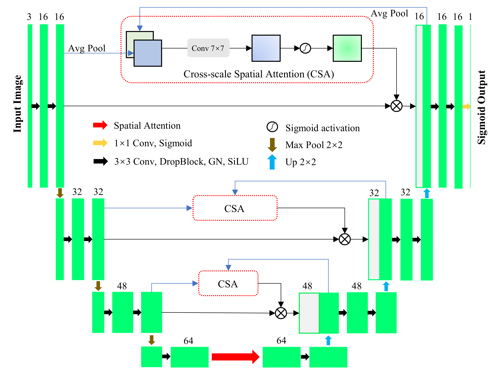

Retinal vessel segmentation is a crucial yet challenging task for early diagnosis of diseases such as diabetes and hypertension. SA-UNet achieves promising performance by introducing spatial attention in the bottleneck, but it underuses attention in skip connections and fails to address the severe foreground–background imbalance.
We propose SA-UNetv2, a lightweight model that injects cross-scale spatial attention into all skip connections to strengthen multi-scale feature fusion and adopts a weighted Binary Cross-Entropy (BCE) + Matthews Correlation Coefficient (MCC) loss to improve robustness to class imbalance.
On the public DRIVE and STARE datasets, SA-UNetv2 achieves state-of-the-art performance with only 1.2MB memory and 0.26M parameters (less than 50% of SA-UNet), and 1 second CPU inference on 592 × 592 × 3 images, demonstrating strong efficiency and deployability in resource-constrained, CPU-only settings.

The Architecture of SA-UNetv2 addresses limitations in convolutional block design and feature fusion through three structural enhancements. First, the convolutional unit is optimized to a Conv 3×3 → DropBlock → Group Normalization → SiLU structure for stability and better gradient flow. Second, the feature channel configuration is compressed to [16, 32, 48, 64], reducing parameter count by 51.9%.
Finally, we propose the Cross-scale Spatial Attention (CSA) module, integrated into all skip connections to bridge the semantic gap between encoder and decoder features. CSA jointly exploits complementary information from both encoder and decoder pathways, enhancing fine-grained structural delineation.
Qualitative comparison of retinal vessel segmentation: SA-UNet vs. SA-UNetv2.
Retinal vessel segmentation faces extreme class imbalance (vessels occupy < 10% of the area). We introduce a differentiable Matthews Correlation Coefficient (MCC) loss combined with Binary Cross-Entropy (BCE). This formulation enforces pixel-level accuracy and global consistency, enhancing sensitivity to thin, low-contrast vessels while preserving high specificity.
| Loss Function (Weight) | F1 (%) | Jacc (%) | Sen (%) | Spe (%) | ACC (%) | MCC (%) | AUC (%) |
|---|---|---|---|---|---|---|---|
| BCE (1.0) | 82.75 | 70.60 | 82.81 | 98.38 | 96.99 | 81.21 | 98.70 |
| MCC (1.0) | 82.73 | 70.56 | 84.35 | 98.16 | 96.93 | 81.17 | 91.71 |
| BCE+MCC (0.5,0.5) | 82.82 | 70.69 | 83.64 | 98.28 | 96.98 | 81.27 | 98.71 |
| Model | Pub | F1 (%) | Jacc (%) | Sen (%) | Spe (%) | ACC (%) | MCC (%) | AUC (%) | Pars (M) | Time (s) |
|---|---|---|---|---|---|---|---|---|---|---|
| U-Net | MICCAI'15 | 81.30 | 68.52 | 80.65 | 98.34 | 96.77 | 79.66 | 98.24 | 8.64 | 3.16 |
| Attention U-Net | MIDL'18 | 81.47 | 68.76 | 81.24 | 98.30 | 96.78 | 79.84 | 98.22 | 8.65 | 7.74 |
| AG-Net | MICCAI'19 | -- | 69.65 | 81.00 | 98.48 | 96.92 | 79.84 | 98.56 | 9.34 | -- |
| U-Net++ | TMI'20 | 81.18 | 68.34 | 82.40 | 98.07 | 96.67 | 79.50 | 98.44 | 10.20 | 6.95 |
| PA-Filter | ISBI'20 | 82.61 | -- | -- | -- | 96.99 | -- | 98.43 | 2.01 | -- |
| UNet3+ | ICASSP'20 | 81.46 | 68.74 | 82.02 | 98.18 | 96.75 | 79.79 | 98.47 | 1.97 | 5.29 |
| ACC-UNet-Lite | MICCAI'23 | 81.26 | 68.47 | 82.05 | 98.14 | 96.71 | 79.57 | 98.34 | 9.14 | 4.41 |
| SA-UNet | ICPR'20 | 82.44 | 70.15 | 83.64 | 98.19 | 96.90 | 80.85 | 98.62 | 0.54 | 1.12 |
| SA-UNetv2 | Ours | 82.82 | 70.69 | 83.64 | 98.28 | 96.98 | 81.27 | 98.71 | 0.26 | 0.95 |
| Model | Pub | F1 (%) | Jacc (%) | Sen (%) | Spe (%) | ACC (%) | MCC (%) | AUC (%) | Pars (M) | Time (s) |
|---|---|---|---|---|---|---|---|---|---|---|
| IterNet | WACV'20 | 82.18 | -- | 77.91 | 98.31 | 95.74 | -- | 98.13 | 8.25 | -- |
| RetinalLiteNet | CVPRW'24 | 80.60 | 67.50 | 78.40 | 98.00 | -- | -- | 97.00 | 0.066 | -- |
| UNetv2 | ISBI'25 | 79.64 | -- | -- | -- | 94.72 | -- | 87.62 | 25.15 | -- |
| MamUNet | ISBI'25 | 81.78 | -- | -- | -- | 95.36 | -- | 90.25 | 16.86 | -- |
| SA-UNet | ICPR'20 | 82.46 | 70.18 | 83.67 | 97.25 | 95.49 | 80.00 | 97.94 | 0.54 | 1.12 |
| SA-UNetv2 | Ours | 82.84 | 70.73 | 83.67 | 97.39 | 95.61 | 80.44 | 98.08 | 0.26 | 0.95 |
* Inference time measured on Intel Xeon CPU @ 2.20GHz (2 cores).
@inproceedings{guo2025saunetv2,
author = {Guo, Changlu and Christensen, Anders Nymark and Dahl, Anders Bjorholm and Yi, Yugen and Hannemose, Morten Rieger},
title = {SA-UNetv2: Rethinking Spatial Attention U-Net for Retinal Vessel Segmentation},
booktitle = {Proceedings of the IEEE International Symposium on Biomedical Imaging (ISBI)},
year = {2026},
}